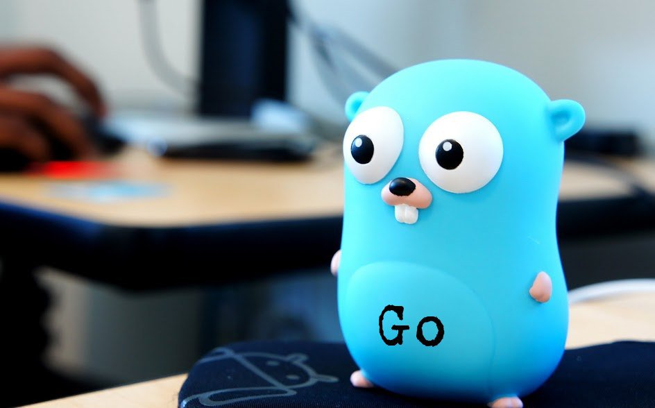

Логотип языка Go
Историческая справка
Программистов Go часто называют сусликами (англ. gophers). Этот зверек также является логотипом данного языка программирования, английский вариант термина — гофер.
Логотип был создан Рене Френд и представлен в 2009 году. Гофер - это персонаж, представляющий собой маленького голубого зверька, похожего на бобра или суслика.
История возникновения гофера связана с неформальным конкурсом на создание логотипа для языка Go. Разработчики языка просили сообщество предложить идеи для символа, который бы отражал дух и философию Go. Рене Френд предложил свою идею гофера, и она была выбрана в качестве официального логотипа.
Гофер стал популярным символом в сообществе Go. Он используется на официальных сайтах, документации, мерчандайзе и других материалах, связанных с языком программирования Go. Логотип гофера стал узнаваемым и символизирует простоту, энергию и дружелюбие, которые являются ключевыми чертами языка Go.
Типы данных в языке Go
| Тип данных | Обозначение | Описание |
|---|---|---|
| Целочисленные типы данных | uint8 | Беззнаковые 8-битные целые числа (от 0 до 255) |
| uint16 | Беззнаковые 16-битные целые числа (от 0 до 65535) | |
| uint32 | Беззнаковые 32-битные целые числа (0 до 4294967295) | |
| uint64 | Неподписанные 64-битные целые числа(от 0 до 18446744073709551615) | |
| int8 | Подписанные 8-битные целые числа(от -128 до 127) | |
| int16 | Подписанные 16-битные целые числа (от -32768 до 32767) | |
| int32 | Подписанные 32-битные целые числа(от -2147483648 до 2147483647) | |
| int64 | Подписанные 64-битные целые числа (от -9223372036854775808 до 9223372036854775807) | |
| Типы с плавающей точкой | float32 | 32-разрядные числа с плавающей запятой IEEE-754 |
| float64 | 64-разрядные числа с плавающей запятой IEEE-754 | |
| complex64 | Сложные числа с действительными и мнимыми частями float32 | |
| complex128 | Сложные числа с действительными и мнимыми частями float64 | |
| Другие числовые типы | byte | такой же, как uint8 |
| rune | такой же, как int32 | |
| uint | 32 или 64 бита | |
| int | такой же размер, как uint | |
| uintptr | целое число без знака для хранения неинтерпретированных битов значения указателя | |
| Логический тип данных | bool | Может принимать значения true и false, используется для хранения значений логических выражений |
| Строковые типы | Используются для хранения символьных строк. Каждый символ строки представляет собой последовательность байтов в памяти. Строки являются неизменяемыми (immutable) объектами в Go -> после создания строки ее содержимое не может быть изменено. Однако, можно создать новую строку, объединив несколько существующих строк. | |
| Производные типы | Включают в себя типы указателей, массивов, структуры, союзов, функций, срезов, интерфейсов, типы карт, типы каналов. | |